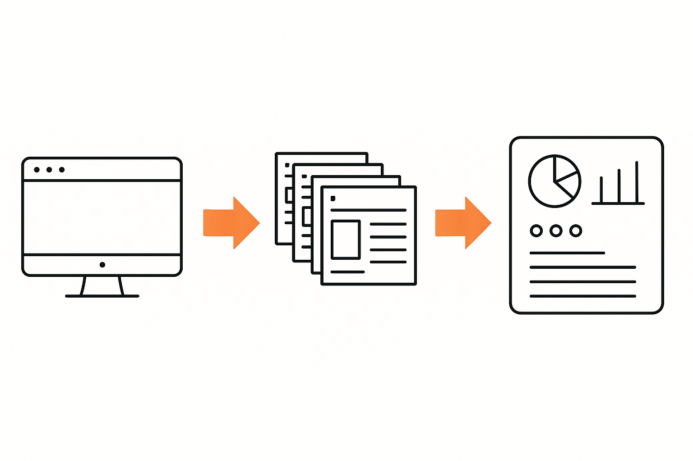
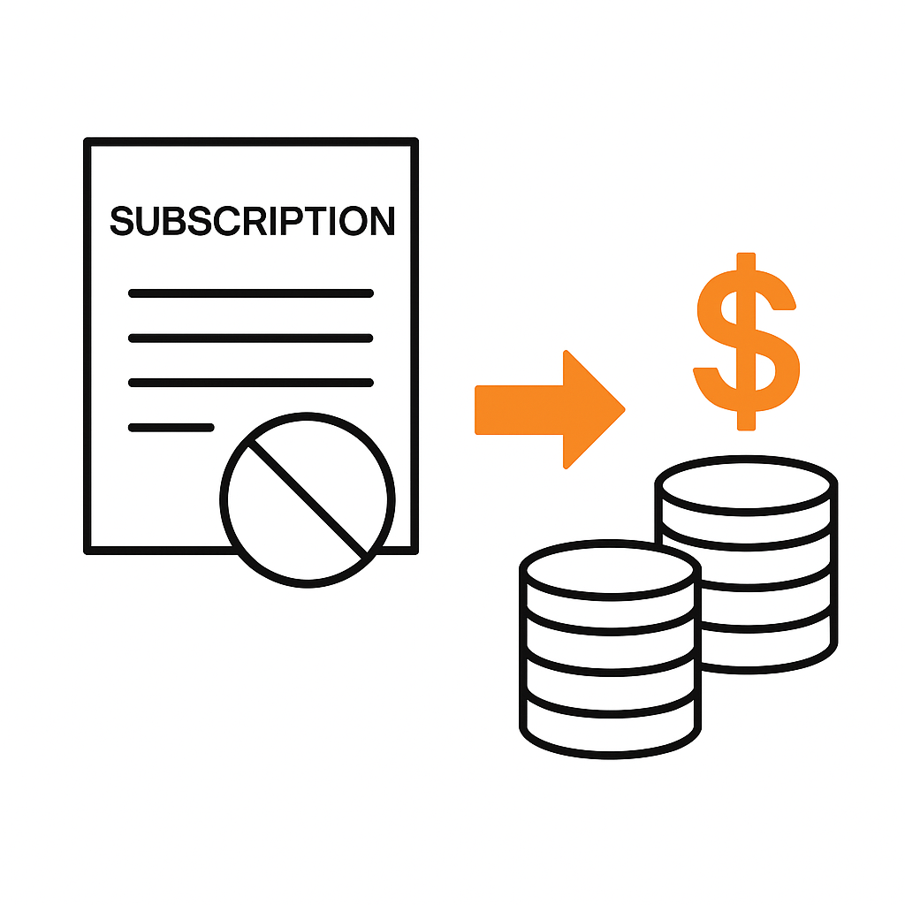
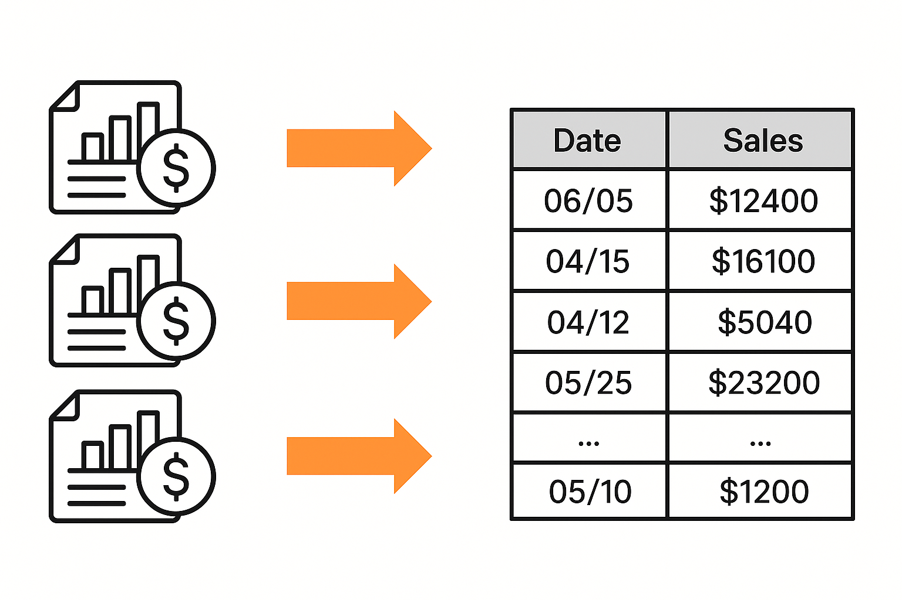
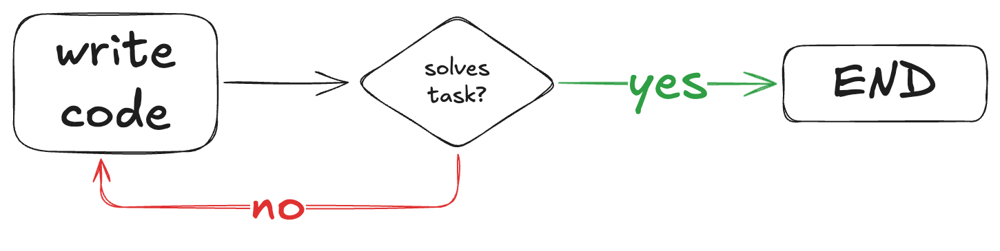
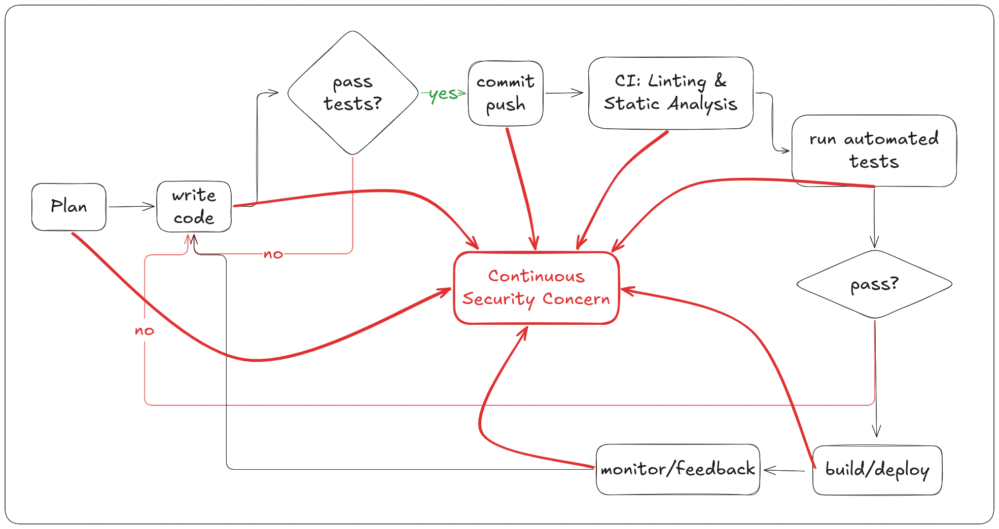
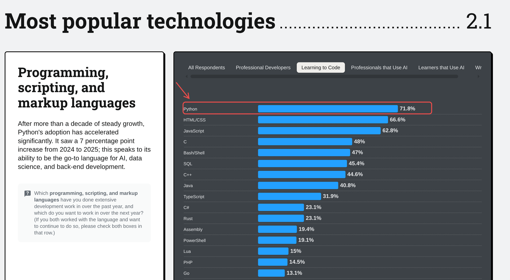
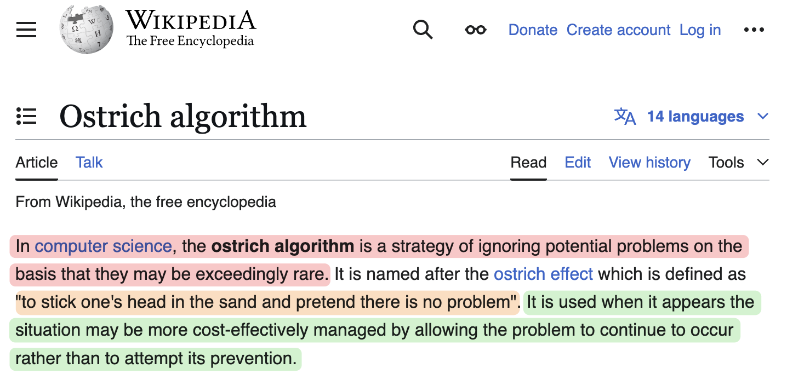
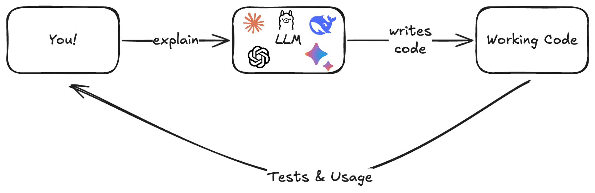
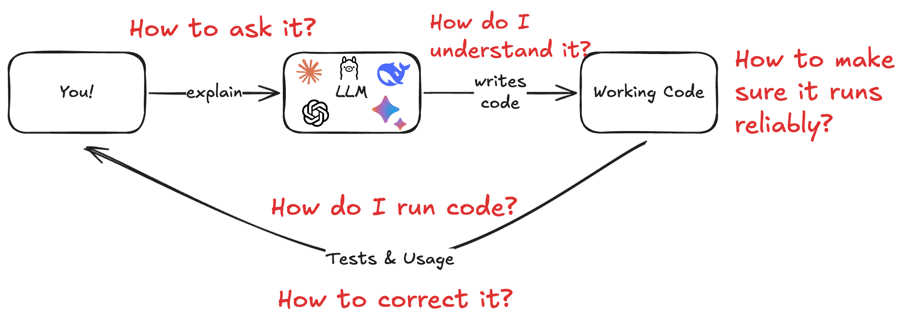
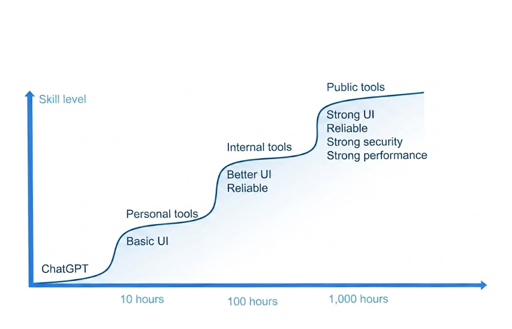

class: center, middle # Using AI Tools and Python to Automate Tasks _A two-day, beginner-friendly journey to streamline workflows, boost productivity, and integrate AI into everyday tasks._ --- # Goals 1. **Understand the basics of Python scripting without prior programming experience** -- 2. **Explore ways to leverage LLMs in combination with Python** -- 3. **Learn how to automate tasks such as file organization and data entry** -- 4. **Use Python scripts to integrate with external LLM APIs** --- class: center, middle # What Can — and Can't — Be Automated with Python? ### Building intuition before writing code --- # Where we're going **Part 1 — What Python _can_ do for you** A framework for spotting automations in your own work. **Part 2 — What Python _can't_ do for you** A framework for avoiding expensive dead ends. > The hard part of automation isn't the code. > AI can write the code. > The hard part is **seeing the automation**. --- class: center, middle # Part 1 ## What can you automate? --- # The core mental model Every automation is three things: # `INPUT → PROCESS → OUTPUT` Before writing any code, fill in three blanks. | Blank | Example | | ------------ | ---------------------------------------------- | | **Input?** | A folder, CSV, URL, PDF, clipboard, API call | | **Process?** | Rename, filter, extract, summarize, convert | | **Output?** | A new file, a report, an email, a sheet row | --- # Example — filled in **Task:** "Rename all photos in a folder by the date they were taken." - **Input:** a folder of photos - **Process:** read each photo's EXIF date - **Output:** renamed files in the same folder If you can say it in one sentence like this, **you have a script**. --- # The sniff test — is it worth automating? Four yes/no questions: 1. Do I do this **more than once**? 2. Are the steps **predictable**? 3. Does the input live somewhere a computer can **reach**? 4. Is the output something a computer can **produce**? **4 yeses** → strong candidate **2 or fewer** → not worth automating yet > Twice is a coincidence. Three times is a script. --- # The five categories Most beginner-friendly automations fall into one of these buckets. | # | Category | What it touches | | - | -------------------- | ---------------------------- | | 1 | Files & folders | Your filesystem | | 2 | Text & data | Documents, tables, PDFs | | 3 | The web | URLs, pages, public data | | 4 | App integrations | Gmail, Slack, Notion, etc. | | 5 | AI-powered | Language & judgment tasks | _A teaching shortcut, not an official taxonomy._ --- # Category examples (1–3) **1. Files & folders** Rename 300 photos by date • Sort Downloads by file type • Zip-backup a folder every Friday **2. Text & data** Clean a CSV • Extract emails from a folder of PDFs • Convert `.docx` → Markdown **3. The web** Track a stock price daily • Scrape public headlines • Call a public API, save as spreadsheet --- # Category examples (4–5) **4. App integrations** Read unread Gmail and log subjects • Post a daily Slack summary • Sync calendar events into Notion **5. AI-powered** Summarize a folder of meeting notes • Classify incoming support emails • Turn voice memo transcripts into clean drafts > Common thread in green-zone work: data is **reachable**, rules are **describable**, errors are **cheap**. --- # From idea to runnable script — 4 steps 1. **Write the one-sentence spec** _"Take `<input>`, do `<process>`, produce `<output>`."_ 2. **Ask an AI to draft it** (template on next slide) 3. **Run it** `uv run python scripts/my_tool.py --input ./folder` 4. **Turn it into a CLI tool** `argparse` + save to `scripts/` + a `--help` description --- # Reusable AI prompt template ``` Write a Python script that: - Takes <input> as input - Does <process> - Produces <output> Make it runnable from the command line with argparse. Use only the standard library unless you need <library>. ``` Paste your one-sentence spec into the blanks. That's it. --- # Script → CLI tool The jump students underestimate is **not** writing the code. It's turning a one-off script into a reusable tool. Three moves: 1. Replace hardcoded paths with `argparse` arguments 2. Save it to `scripts/` with a clear name 3. Add a one-line `--help` description **That's the whole difference** between a script and a tool. --- class: center, middle # Part 2 ## What Python _can't_ do for you --- # The core frame: the four R's Before committing to automate something, ask: | Question | What it's really asking | | ----------------- | ----------------------------------------------------------- | | **Reach?** | Can my code get to the data and act on the system? | | **Rules?** | Can I describe the logic in plain steps? | | **Reliability?** | Am I OK with occasional mistakes? | | **Risk?** | If it misfires, is the worst case recoverable? | The four answers sort every task into a zone. --- # Three zones **■ GREEN** — Build it. Python is great at this. **■ YELLOW** — Possible, but fragile. Build it small. Babysit it. **■ RED** — Don't aim Python here. Keep a human in the loop. --- # **Green zone** — Python shines - Moving data between files and formats (CSV ↔ JSON ↔ Excel, PDFs, logs) - Talking to documented APIs (OpenAI, Anthropic, GitHub, Notion, Gmail) - Scraping **public, static** web pages - Running things on a schedule (backups, daily reports) - LLM language tasks: summarize, classify, extract, rewrite - Gluing tools together — "when X happens in A, write to B" Common thread: **reachable, describable, cheap to get wrong.** --- # **Yellow zone** — possible, but fragile - Scraping sites with logins, captchas, or heavy JavaScript - Automating desktop apps by clicking buttons (breaks on every update) - Parsing messy/inconsistent documents (scanned PDFs, wild emails) - Anything that "mostly works" 90% of the time — when the other 10% matters - Long chains of AI calls without verification steps > Rule of thumb: **build it small, watch it run, expect to babysit.** --- # **Red zone** — wrong shape of problem **Reach:** closed systems, 2FA/SSO with no API, mobile-only apps, physical tasks **Rules:** tasks that need genuine human judgment every time **Reliability:** near-perfect is required (medical, legal, safety) **Risk:** irreversible or expensive failure (moving money, mass email, bulk delete) > If any of the four R's lands in red, **keep the human in the loop** — or pick a smaller version of the task. --- # The AI-specific trap Because this course uses AI heavily, two failure modes matter: **1. Silent wrongness** LLMs produce confident, fluent output even when it's wrong. **2. Drift** The same prompt can give different outputs on different days or model versions. **Habit:** print the AI's output before you act on it — for the first dozen runs at least. --- # 30-second "which zone?" checklist Before you build: - [ ] I can **reach** the input without manual steps - [ ] I can **describe the rules** in a paragraph - [ ] I'm OK with occasional errors, or I have a way to catch them - [ ] If the script misfires, the worst case is **easy to undo** **4 checks** → build it **3 checks** → build small, watch it run **2 or fewer** → don't automate yet. Do it by hand and learn the shape first. --- # 5-minute exercise 1. Write down **three repetitive tasks** from your week 2. For each: fill in **Input → Process → Output** 3. For each: answer the **four R's** (reach, rules, reliability, risk) 4. Sort them: **green** / **yellow** / **red** 5. Build only the **green** ones this week 6. Write one sentence for each **red** one explaining _why_ it's red That last sentence is often the most valuable thing you'll learn. --- class: center, middle ## The real skill isn't Python. ### It's instantly recognizing ### what's automatable and what isn't — ### and not wasting a weekend on a task ### that was always in the red zone. --- class: center, middle <h1> <span style="background-color: orange"> Survey Question: Do you have a subscription for ChatGPT/Claude/Gemini? </span> </h1> --- class: center, middle # Programming? --- class: center, middle # Making Machines Do What You Want 🤖 --- # Example: Instructing a Robot -- - The Task: **"Move forward, pick up the box, turn right, place the box"** -- - The Code: ```python def deliver_package(): robot.move_forward(steps=10) robot.pick_up("box") robot.turn_right(90) robot.place_item("box") robot.say("Package delivered!") ``` -- <div style="display: flex; align-items: center; margin-top: 28px;"> <div style="flex: 1; text-align: center;"> <div style="font-size: 150px;">🤖</div> <p style="font-size: 0.9em;">The robot follows your instructions exactly!</p> </div> </div> --- # It's Like Writing Recipes <div style="display: flex; align-items: center;"> <div style="flex: 1;"> <pre><code class="python" style="font-size: 0.8em;"># Pancake Making Algorithm def make_pancake(): # Step 1: Prepare batter base batter = mix_flour_and_milk() # Step 2: Complete the batter batter = add_egg_and_stir(batter) # Step 3: Prepare cooking surface pan = heat_pan_on_stove() # Step 4: Start cooking pour_batter_in_pan(pan, batter) # Step 5: Wait for indicator wait_for_bubbles() # Step 6: Turn the pancake flip_pancake() # Step 7: Finish cooking cook_other_side() return pancake </code></pre> </div> </div> --- class: center, middle # Why Learn to Automate? --- class: center, middle # Automate Repetitive Tasks <p></p> --- class: center, middle # Increase Productivity --- class: center, middle # Replacing Subscriptions (saving $) <p></p> --- class: center, middle # Analyse Massive Amounts of Data <p></p> --- class: center, middle # The Real Reason.... --- class: center, middle # Writing code = the most general skill you can have! *It is a superpower! :)* --- class: center, middle # Important Clarification ## Learning to automate ≠ Everyone should be a developer --- # Automation is for Everyone -- - Automation skills are for **everyone** -- - Professional software engineering is a **specialized career** -- - You can be productive with code **without becoming a full-time developer** -- - It's about writing **scripts** not fancy software -- - Script = **simple program** that automates a task -- - Professional software = **complex program engineered** to be used by many people --- class: center, middle # Scripting ≠ 'Software Engineering' --- class: center, middle # Who Are You Building For? <div style="margin-top: 24px;"> <table style="margin: 0 auto; border-collapse: collapse; font-family: 'Droid Serif'; font-size: 1em; width: 85%;"> <thead> <tr style="background: #1a1a2e; color: white;"> <th style="padding: 12px 20px; text-align: left; font-family: 'Yanone Kaffeesatz'; font-size: 1.2em; font-weight: normal;">Audience</th> <th style="padding: 12px 20px; text-align: center; font-family: 'Yanone Kaffeesatz'; font-size: 1.2em; font-weight: normal;">Reliability</th> <th style="padding: 12px 20px; text-align: center; font-family: 'Yanone Kaffeesatz'; font-size: 1.2em; font-weight: normal;">Security</th> <th style="padding: 12px 20px; text-align: center; font-family: 'Yanone Kaffeesatz'; font-size: 1.2em; font-weight: normal;">Scalability</th> <th style="padding: 12px 20px; text-align: center; font-family: 'Yanone Kaffeesatz'; font-size: 1.2em; font-weight: normal;">UX</th> </tr> </thead> <tbody> <tr style="background: #f8f8f8;"> <td style="padding: 10px 20px; font-weight: bold;">🌍 Public</td> <td style="padding: 10px 20px; text-align: center;">⭐⭐⭐</td> <td style="padding: 10px 20px; text-align: center;">⭐⭐⭐</td> <td style="padding: 10px 20px; text-align: center;">⭐⭐⭐</td> <td style="padding: 10px 20px; text-align: center;">⭐⭐⭐</td> </tr> <tr> <td style="padding: 10px 20px; font-weight: bold;">🤝 Partners</td> <td style="padding: 10px 20px; text-align: center;">⭐⭐</td> <td style="padding: 10px 20px; text-align: center;">⭐⭐</td> <td style="padding: 10px 20px; text-align: center;">⭐⭐</td> <td style="padding: 10px 20px; text-align: center;">⭐⭐</td> </tr> <tr style="background: #f8f8f8;"> <td style="padding: 10px 20px; font-weight: bold;">🏢 Internal</td> <td style="padding: 10px 20px; text-align: center;">⭐⭐</td> <td style="padding: 10px 20px; text-align: center;">⭐</td> <td style="padding: 10px 20px; text-align: center;">⭐</td> <td style="padding: 10px 20px; text-align: center;">⭐⭐</td> </tr> <tr> <td style="padding: 10px 20px; font-weight: bold;">🧑💻 Personal</td> <td style="padding: 10px 20px; text-align: center;">⭐</td> <td style="padding: 10px 20px; text-align: center;">⭐</td> <td style="padding: 10px 20px; text-align: center;">⭐</td> <td style="padding: 10px 20px; text-align: center;">⭐</td> </tr> </tbody> </table> <p style="font-size: 0.75em; color: #888; margin-top: 16px;">The audience shapes every technical decision you make</p> </div> --- class: center, middle # Scripting <p></p> --- class: center, middle # Software Engineering <p></p> --- # Scripting - Writing code to full fill a set of pre-defined steps that accomplish a task -- - Quick, targeted, and task-oriented -- - You don't think that much about it -- - Typically used for automations, data manipulation, or utility tasks --- class: center, middle # Real Automation Examples (that I use!) --- class: center, middle # Bulk YouTube Upload Automation ??? - Problem: Upload 50 videos with custom metadata (titles, descriptions...) - Solution: Script that reads metadata from a spreadsheet and automates the upload process - Saved: 10+ hours of repetitive clicking --- class: center, middle # Notes Processor ??? - Problem: Convert scattered meeting notes into organized summaries with action items - Solution: Script that parses notes, extracts key points, and generates formatted reports - Benefit: Consistent documentation without manual reformatting --- class: center, middle # Your automation doesn't need to be perfect—it just needs to solve YOUR problem! --- class: center, middle <div style="display: flex; align-items: center; justify-content: center;"> <h1 style="margin-right: 20px;">Why Python?</h1> <img src="../assets/media/python-logo.svg" width="100px"> </div> --- <div style="display: flex; align-items: left; "> <h1 style="margin-right: 20px;">What is Python?</h1> <img src="../assets/media/python-logo.svg" width="100px"> </div> **Python** is a high-level, general-purpose programming language designed for readability and simplicity. -- Created by Guido van Rossum in 1991, Python emphasizes code that reads like English. -- <div style="display: flex; align-items: center; margin-top: 20px;"> <div style="flex: 1;"> <h3>English:</h3> <p style="font-size: 1.1em;">"For each item in my shopping list, print the item"</p> </div> <div style="flex: 1;"> <h3>Python:</h3> <pre><code class="python" style="font-size: 1.0em;">for item in shopping_list: print(item)</code></pre> </div> </div> -- **See how similar they are? That's Python's superpower!** --- <div style="display: flex; align-items: left; "> <h1 style="margin-right: 20px;">Python is Easy and Everywhere</h1> <img src="../assets/media/python-logo.svg" width="100px"> </div> <div style="text-align: center;"> <div style="display: inline-block; background: #f0f0f0; border-radius: 16px; padding: 16px;"> <p></p> </div> </div> --- <div style="display: flex; align-items: left; "> <h1 style="margin-right: 20px;">Python is Easy and Everywhere</h1> <img src="../assets/media/python-logo.svg" width="100px"> </div> - **General Purpose**: Can be used for web development, data science, automation, AI, and more -- - **Most Popular**: #1 language among developers worldwide (TIOBE Index, Stack Overflow) -- - **Powers Modern Technology**: - 🤖 AI & Machine Learning (TensorFlow, PyTorch) - 🚗 Self-driving cars (Tesla, Waymo) - 👁️ Computer vision & image recognition - 🌐 Web applications (Instagram, Spotify, Netflix) - 🔬 Scientific computing & research -- - **Beginner-Friendly**: Reads like English, minimal syntax complexity --- # Scripting with Python -- - Much faster learning curve - *if it works don't change it* -- - Immediate practical benefits - *makes your life better* -- - Ideal for nondevelopers who just want to get things done -- - **It's about learning to solve YOUR specific problems** -- - Scripts should be **tailored to your unique needs**, not one-size-fits-all solutions --- class: center, middle # _The Ostrich Approach to Learning Python_ <div style="text-align: center;"> </div> --- class: center, middle <div style="text-align: center;"> <p></p> </div> --- class: center, middle # It's about Learning What We Need for Our Tasks! -- *And purposefuly ignoring that which does not seem to have any effect on its success.* --- class: center, middle # The Busy Person Guide to Python Basics --- # Python Things We Will Learn - **Basic Syntax**: Indentation, variable assignments, printing -- - **Common Data Types**: Strings, integers, floats, booleans -- - **Control Structures**: `if` statements, loops (`for`, `while`) -- - **Useful Libraries**: `os` for file operations, `csv` for handling CSVs, `requests` for making web requests -- - Learn a mental framework for when and how to automate -- - Develop an intuition for what is possible with automation --- class: center, middle <h1> <span style="background-color: lightgreen;"> Demo - Setting Up Your Environment </span> </h1> (Installing Python, uv, Editor, Jupyter Notebook, AI chatbot) <div style="display: flex; justify-content: center; align-items: center; margin-top: 20px;"> </div> --- # Python Setup Summary What you should have installed: -- - **Python** (via `pyenv` or the official installer) -- - **uv** — the fast Python package manager (`pip install uv` or `curl -LsSf https://astral.sh/uv/install.sh | sh`) -- - **A code editor** (VS Code recommended) -- - **Jupyter Notebook** — `uv run --with jupyter jupyter lab` -- - **An AI chatbot** (ChatGPT, Claude, or Gemini) > Everything we do in this course runs via `uv run` — no manual environment activation needed. --- # Data Types, Operations, Variables - Writing code is about writing text that changes or manipulates data in some way -- - <div style="display: flex; align-items: center;"> <div> For that we need? ..... (drumbroll)</div> <div></div> </div> - **Data!** Specifically a way to describe it, reference it, talk about it etc... -- - In Python data can be of different **types** (like numbers, text, image etc...) -- - The things we can do to it are called **operations** (like 5+5) -- - To organize things, we use **variables** to define what each thing is --- # Data Types, Operations, Variables - Example - Here is a piece of code that defines a variable of some type and performs a simple operation on the data stored in the variable ```python # This is data of type string! name = "Lucas" # This is data of type integer! actual_age = 33 # This is data of type integer! mental_age = 12 # our operation average_age_between_actual_and_mental = (actual_age + mental_age) / 2 # special function that displays what goes inside of it print(average_age_between_actual_and_mental) # this would be a float! # Output: 22.5 ``` --- class: center, middle <h1> <span style="background-color: lightgreen"> Data Types; Operations; Variables - Demo </span> </h1> --- # Data Types, Operations, Variables - **Core Data Types**: -- - **int**: whole nubmers like 1, 2, 3 ... -- - **float**: decimal numbers like 1.1, 1.0, etc... -- - **string**: text like `'Hello'` -- - **bool**: logical booleans like True or False -- - **Operations**: -- - **Arithmetic** `(`+`, `-`, `*`, `/`, `**`, `//`, `%`)` -- - **String concatenation** (`'Lucas' + ' is' + ' wonderful' = 'Lucas is wonderful'`) -- - **Logical operations** (`and`, `or`, `not`) -- - **Comparison operations** (`>`, `<`, `>=`, `<=`, `==`, `!=`) --- - **Variables**: Storing data for reuse, assigning and reassigning values: ```python a = 10 b = 20 print(a + b) # Output: 30 ``` --- class: center, middle <h1> <span style="background-color: lightgreen"> Demo: Functions, Lists & Loops </span> </h1> --- # Functions -- - Functions are a way to group code that performs a specific task -- - Functions can take parameters and return values -- - For example, a function that calculates the total cost of an item including tax -- - We could do this by simply writing a script: -- ```python # Arithmetic operation: multiplication of parameters tax = price * tax_rate # Arithmetic operation: addition of variables total = price + tax ``` - But what if I want to re-use this code for different prices and tax rates? --- # Functions - Here is what it would look like if we define a function to do this: ```python def calculate_total(price, tax_rate): tax = price * tax_rate total = price + tax return total ``` -- - Now we can re-use the function for different prices and tax rates: ```python shirt_price = 10 shirt_tax_rate = 0.05 pants_price = 20 pants_tax_rate = 0.1 print(calculate_total(shirt_price, shirt_tax_rate)) # Output: 10.5 print(calculate_total(pants_price, pants_tax_rate)) # Output: 22.0 ``` --- # Functions - **Why Functions?**: Reuse code and break tasks into smaller chunks -- - **Defining a Function**: `def function_name(parameters):` -- - **Return Values**: Make your functions flexible and reusable -- - **Best Practices**: Keep them short, descriptive, and single-purpose --- # Lists & Loops - **Lists**: Python’s go-to data structure for ordered collections -- ```python # Define a list of tasks tasks = ["Buy groceries", "Finish project", "Call the bank"] ``` - **Access Elements**: Indexing and slicing -- ```python print(tasks[0]) # Output: Buy groceries print(tasks[1]) # Output: Finish project ``` -- - **Slice**: Get a range of elements -- ```python print(tasks[0:2]) # Output: ['Buy groceries', 'Finish project'] ``` --- # Lists & Loops - **Loops**: `for` loops to iterate over items -- ```python tasks = ["Buy groceries", "Finish project", "Call the bank"] for task in tasks: print(task) ``` -- - **Processing List Elements**: With `for` loops we can perform the same operation on each element of the list -- ```python # Below we use an imaginary function that asks a robot to do a task for task in tasks: ask_robot_to_do(task) ``` -- **Common Uses**: Batch renaming files in a directory, processing data from tables, etc... --- class: center, middle <h1> <span style="background-color: lightgreen"> Demo - Dictionaries, Tabular Data, Conditionals </span> </h1> --- # Dictionaries & Tabular Data - **Dictionaries**: Key-value pairs for storing related data -- ```python # Dictionary of product prices prices = { "apple": 0.50, "banana": 0.75, "orange": 0.60 } ``` -- - **Accessing Values**: Use keys to lookup values quickly -- ```python print(prices["apple"]) # Output: 0.50 print(prices["banana"]) # Output: 0.75 ``` -- - **Common Uses**: Storing configurations, mapping relationships, caching data --- # Comparators & Conditionals - **Boolean Comparisons**: `==`, `!=`, `>`, `<`, `>=`, `<=` -- ```python # Example of a boolean comparison a = 10 b = 20 print(a == b) # Output: False print(a != b) # Output: True print(a > b) # Output: False print(a < b) # Output: True print(a >= b) # Output: False print(a <= b) # Output: True ``` -- - **Logical Operators**: `and`, `or`, `not` -- ```python # Example of a logical operator print(True and False) # Output: False print(True or False) # Output: True print(not True) # Output: False ``` --- # Comparators & Conditionals - **Conditionals**: Using conditionals `if/elif/else` to perform different actions based on data -- ```python # Example of an if statement if a > b: print("a is greater than b") ``` -- ```python # Example of an if/else statement if a > b: print("a is greater than b") else: print("a is less than or equal to b") ``` -- ```python # Example of an if/elif/else statement if a > b: print("a is greater than b") elif a == b: print("a is equal to b") else: print("a is less than b") ``` --- # The "Just Ask AI" Naive Approach -- <div style="display: flex; justify-content: center; align-items: center; margin-top: 150px;"> <p></p> </div> --- # The "Just Ask AI" Naive Approach <div style="display: flex; justify-content: center; align-items: center; margin-top: 120px;margin-left: 50px;"> <p></p> </div> --- class: center, middle # Poll Questions 🗳️ --- # Poll Question 1 **What will this code output?** ```python age = 25 if age >= 18: print("Adult") else: print("Minor") ``` -- **Answer:** `Adult` -- **Explanation:** Since 25 is greater than or equal to 18, the condition is True, so "Adult" is printed. --- # Poll Question 2 **What's wrong with this code?** ```python tasks = ["Email", "Meeting", "Code"] print(tasks[3]) ``` -- **Answer:** Index out of range error! -- **Explanation:** Lists are zero-indexed. This list has indices 0, 1, 2. There is no index 3! - `tasks[0]` → "Email" - `tasks[1]` → "Meeting" - `tasks[2]` → "Code" --- # Poll Question 3 **Fill in the blank to print each fruit:** ```python fruits = ["apple", "banana", "cherry"] ___ fruit ___ fruits: print(fruit) ``` -- **Answer:** ```python for fruit in fruits: print(fruit) ``` -- **Explanation:** The `for` loop iterates through each item in the list, and `in` checks membership. --- # Poll Question 4 **What does this code print?** ```python def greet(name): return "Hello, " + name + "!" print(greet("Lucas")) ``` -- **Answer:** `Hello, Lucas!` -- **Explanation:** `greet` is *defined* with `def`, then *called* with `greet("Lucas")`. The argument `"Lucas"` fills the `name` parameter, and the function `return`s the assembled string, which `print` displays. --- # Poll Question 5 **What does this loop print?** ```python numbers = [2, 4, 6] total = 0 for n in numbers: total = total + n print(total) ``` -- **Answer:** `12` -- **Explanation:** The `for` loop visits each item in the list once, adding it to `total` (2, then 6, then 12). After the loop finishes, `total` holds the sum of every element. --- # Poll Question 6 **What does this code print?** ```python name = "Lucas" age = 33 print(f"{name} is {age} years old") ``` -- **Answer:** `Lucas is 33 years old` -- **Explanation:** An **f-string** (the `f` before the quotes) lets you drop variables directly inside `{ }`. Python replaces `{name}` and `{age}` with their values — no `+` or manual conversion needed. --- # Poll Question 7 **What is this code doing?** ```python from openai import OpenAI client = OpenAI() response = client.responses.create( model="gpt-4o-mini", input="Say hello in one word." ) print(response.output_text) ``` -- **Answer:** Sending a prompt to an AI model and printing its reply. -- **Explanation:** We create a `client`, send our `input` (the prompt) to a `model`, and the AI sends back a `response`. This is the core input → process → output pattern for every AI API call. --- # Poll Question 8 **What's the safest way to read a file in Python?** ```python with open("notes.txt", "r") as f: contents = f.read() print(contents) ``` -- **Answer:** Using `with open(...)` — it closes the file automatically. -- **Explanation:** The `with` block opens the file, lets you `read()` it, then **closes it for you** even if something goes wrong. `"r"` means read mode; use `"w"` to write and `"a"` to append. --- class: center, middle <h1> <span style="background-color: lightgreen"> Demo - Working with Data, APIs & Packages </span> </h1> --- # Reading/Writing - **Tabular Data**: Data that is organized in a table format -- - **Common Formats**: `.csv`, `.json`, `.xlsx`, `.xls` -- - CSV Files store data in rows and columns via comma-separated values: ```text Name,Age,City John Smith,32,New York Jane Doe,28,San Francisco ``` <table style="border-collapse: collapse; width: 80%; margin: 20px auto;"> <tr style="background-color: #f2f2f2;"> <th style="border: 1px solid #ddd; padding: 8px; text-align: left;">Name</th> <th style="border: 1px solid #ddd; padding: 8px; text-align: left;">Age</th> <th style="border: 1px solid #ddd; padding: 8px; text-align: left;">City</th> </tr> <tr> <td style="border: 1px solid #ddd; padding: 8px;">John Smith</td> <td style="border: 1px solid #ddd; padding: 8px;">32</td> <td style="border: 1px solid #ddd; padding: 8px;">New York</td> </tr> <tr style="background-color: #f2f2f2;"> <td style="border: 1px solid #ddd; padding: 8px;">Jane Doe</td> <td style="border: 1px solid #ddd; padding: 8px;">28</td> <td style="border: 1px solid #ddd; padding: 8px;">San Francisco</td> </tr> </table> --- class: center, middle # Understanding APIs & Packages --- # What is an API? **API** = Application Programming Interface -- A way for different programs to communicate with each other. -- **Think of it like a restaurant:** - You (your code) look at the menu (API documentation) - You tell the waiter (API) what you want - The kitchen (external service) prepares it - The waiter brings back your order (response) -- **Real-World Example: Google Maps API** <div style="text-align: center; margin-top: 20px;"> <div style="display: flex; justify-content: space-around; align-items: center;"> <div style="flex: 1; text-align: center;"> <p style="font-size: 1.2em;">🏨 <strong>Booking.com</strong></p> <p style="font-size: 0.9em;">Shows hotel locations on map</p> </div> <div style="flex: 0.3; text-align: center;"> <p style="font-size: 2em;">→ 🗺️ ←</p> <p style="font-size: 0.8em;">Google Maps API</p> </div> <div style="flex: 1; text-align: center;"> <p style="font-size: 1.2em;">🏠 <strong>Airbnb</strong></p> <p style="font-size: 0.9em;">Shows property locations</p> </div> </div> </div> -- Neither Booking nor Airbnb built their own mapping system—they just use Google's API! --- # What are Packages and Imports? **Package** = A collection of pre-written Python code (functions, classes) that you can reuse -- **Import** = The command to bring a package into your script so you can use it -- **Example:** ```python # Import the 'requests' package to make HTTP calls import requests # Now we can use functions from the requests package response = requests.get("https://api.example.com/data") print(response.json()) ``` -- **Think of it like:** - Package = A toolbox full of tools - Import = Taking the toolbox out so you can use the tools - Using the package = Actually using the tools to build something -- **Popular packages:** `requests` (HTTP calls), `pandas` (data analysis), `openai` (AI services) --- # Package Versions: What Does `x.x.x` Mean? Every package has a version number with **3 parts** — e.g., `requests==2.31.0` -- | Number | Name | Changes when... | |--------|------|-----------------| | **2**.31.0 | **Major** | Breaking changes — old code may stop working | | 2.**31**.0 | **Minor** | New features added, backwards compatible | | 2.31.**0** | **Patch** | Bug fixes only, safe to update | -- **Rule of thumb:** - Patch bumps → safe to update anytime - Minor bumps → usually safe, check changelog - Major bumps → read the migration guide ⚠️ -- ```python # Pinning exact versions = reproducible, predictable code requests==2.31.0 # this exact version requests>=2.31.0 # this version or newer requests~=2.31.0 # 2.31.x only (patch updates ok) ``` --- # The Package Management Problem 📦 When you write a Python automation script, it needs: -- 1. **A specific Python version** (e.g., Python 3.11) -- 2. **Specific package versions** (e.g., `requests==2.31.0`, `pandas==2.0.1`) -- 3. **Isolated environment** (so different projects don't conflict) -- **Traditional Approach: Multiple Files + Virtual Environments** <div style="display: flex; justify-content: space-around; margin-top: 20px;"> <div style="flex: 1; margin: 10px;"> <p><strong>📄 automation.py</strong></p> <pre style="font-size: 0.7em;">import requests import pandas <pre style="font-size: 0.7em;"># Your code here...</pre> </div> <div style="flex: 1; margin: 10px;"> <p><strong>📄 requirements.txt</strong></p> <pre style="font-size: 0.7em;">requests==2.31.0 pandas==2.0.1 numpy==1.24.0 </pre> </div> <div style="flex: 1; margin: 10px;"> <p><strong>📄 .python-version</strong></p> <pre style="font-size: 0.7em;">3.11</pre> </div> </div> -- **Tools:** pipenv, conda, venv, poetry... **Confusing for beginners!** --- class: center, middle <h1> <span style="background-color: lightgreen"> Demo - The Package Management Problem </span> </h1> --- # Enter UV: The Simple Solution ✨ <div style="text-align: center;"> <p style="font-size: 1.3em;"><strong>UV = Python script runner + package manager in one</strong></p> </div> -- **Everything in a single file!** ```python # /// script # requires-python = ">=3.11" # dependencies = [ # "requests==2.31.0", # "pandas==2.0.1", # ] # /// import requests import pandas as pd # Your automation code here... response = requests.get("https://api.example.com/data") df = pd.DataFrame(response.json()) print(df.head()) ``` --- # UV: Single File vs Traditional Approach <div style="display: flex; justify-content: space-around; align-items: center;"> <div style="flex: 1; text-align: center;"> <h3>Traditional 😓</h3> <ul style="text-align: left; font-size: 0.9em;"> <li>Create virtual environment</li> <li>Activate environment</li> <li>Install packages</li> <li>Manage requirements.txt</li> <li>Remember which env to use</li> </ul> <p style="font-size: 0.8em; margin-top: 20px;">📁 Multiple files<br/>📚 Complex workflow</p> </div> <div style="flex: 0.2; text-align: center; font-size: 3em;"> VS </div> <div style="flex: 1; text-align: center;"> <h3>UV 🚀</h3> <ul style="text-align: left; font-size: 0.9em;"> <li>Write your script</li> <li>Add dependencies at the top</li> <li>Run: <code>uv run script.py</code></li> </ul> <p style="font-size: 0.8em; margin-top: 20px;">📄 One file<br/>⚡ Simple workflow</p> </div> </div> -- **Perfect for vibe scripting!** → Learn more: https://docs.astral.sh/uv/guides/scripts/ --- # Run Your Scripts Like Commands (Mac/Linux) Turn `uv run ~/scripts/my_script.py` into a short command you can type anywhere. -- 1. Your script lives at a path, e.g. `~/scripts/my_script.py` 2. Add an **alias** (or function for arguments) to `~/.aliases`: ```bash # Simple alias alias myscript='uv run ~/scripts/my_script.py' # Function — passes all arguments through with "$@" myscript() { uv run ~/scripts/my_script.py "$@"; } ``` -- 3. **Source it** from your `~/.zshrc` or `~/.bashrc`: ```bash source ~/.aliases ``` Now just type `myscript` from anywhere. 🎉 --- # Run Your Scripts Like Commands (Windows) Same idea using a **PowerShell function** in your profile. -- 1. Open your profile: `notepad $PROFILE` 2. Add a function (`@args` passes all arguments through): ```powershell function myscript { uv run C:\scripts\my_script.py @args } ``` 3. Reload it: `. $PROFILE` (or restart the terminal) -- **Alternative — a batch file** named `myscript.cmd` in a folder on your PATH: ```cmd @echo off uv run C:\scripts\my_script.py %* ``` `%*` passes all arguments through. --- class: center, middle <h1> <span style="background-color: lightgreen;"> Demo - Vibe Scripting with UV + AI </span> </h1> --- class: center, middle # The Vibe Scripting Steps <div style="display: flex; justify-content: center; align-items: center; margin-top: 30px;"> <img src="../assets/media/vibe-scripting-workflow.png" width="90%"> </div> --- # The Vibe Scripting Workflow 🔄 <div style="text-align: center; margin-top: 40px;"> <div style="display: flex; align-items: center; justify-content: center; font-size: 1.5em; margin-bottom: 30px;"> <div style="margin: 0 0px;">🤖 <strong>AI</strong></div> <div style="margin: 0 0px;">→</div> <div style="margin: 0 0px;">💻 <strong>CODE</strong></div> <div style="margin: 0 0px;">→</div> <div style="margin: 0 0px;">📄 <strong>file.py</strong></div> <div style="margin: 0 0px;">→</div> <div style="margin: 0 0px;">⚡ <code>uv run file.py</code></div> <div style="margin: 0 0px;">→</div> <div style="margin: 0 0px;">👁️ <strong>Review</strong></div> </div> <div style="margin-top: 50px; font-size: 1.2em;"> <div style="border: 3px solid #4CAF50; border-radius: 10px; padding: 20px; display: inline-block;"> <p style="margin: 10px 0;"><strong>Does it solve your problem?</strong></p> <div style="display: flex; justify-content: space-around; margin-top: 20px;"> <div style="flex: 1; padding: 10px;"> <p style="color: red; font-size: 1.3em;">❌ No</p> <p style="font-size: 0.9em;">→ Back to AI 🤖<br/>(refine & iterate)</p> </div> <div style="border-left: 2px solid #ccc;"></div> <div style="flex: 1; padding: 10px;"> <p style="color: green; font-size: 1.3em;">✅ Yes</p> <p style="font-size: 0.9em;">→ Done! 🎉<br/>(problem solved)</p> </div> </div> </div> </div> </div> --- class: center, middle # How to Use AI to Learn/Use Python *A quick detour to set up an AI toolkit to speed up our Automation skills * --- class: center, middle # Learning Python with AI *Your Personal Programming Tutor* --- class: center, middle # The AI Coding Upskilling Curve <div style="margin-top: 16px;"> <p></p> </div> --- class: center, middle <h1> <span style="background-color: lightgreen;"> Demo - Conversational Learning with AI for Python </span> </h1> --- # File Management Automation Your Downloads folder has 2,000 files and you can't find anything. Python can sort, rename, and tidy all of it in seconds. -- - **Organise a messy folder** by file type — zero manual effort -- - **Categorise images** using AI vision — no manual sorting needed -- - **Analyse a directory** by file type and generate a visual summary <br><br> <h2 style="text-align: center"><span style="background-color: lightgreen">`scripts/demos/file-management`</span></h2> --- # PDF & Document Automation You have 50 invoices to read and a spreadsheet to fill by hand. AI can pull every number out for you while you grab a coffee. -- - **Summarise any PDF** in one command — research papers, reports, anything -- - **Extract structured data** from invoices and receipts with AI — straight into a spreadsheet -- - **Chat interactively** with any PDF — ask questions, get answers <br><br> <h2 style="text-align: center"><span style="background-color: lightgreen">`scripts/demos/pdf-documents`</span></h2> --- # Data & Dashboards You rebuild the same Excel chart every Monday morning. Python can fetch the data, refresh the charts, and even explain the trends for you. -- - **Build interactive dashboards** from any CSV in minutes with plotly -- - **Fetch live API data** and persist it automatically in a local database -- - **Analyse log files with AI** — spot patterns and get charts automatically <br><br> <h2 style="text-align: center"><span style="background-color: lightgreen">`scripts/demos/data-dashboards`</span></h2> --- # Browser Automation You fill in the same web form every single day. Python can open the site, type everything, and click submit while you do something useful. -- - **Automate timesheets** — open the site, fill the form, submit, done -- - **Scrape Letterboxd reviews** and summarise them with AI -- - **Extract IMDB data** — search, navigate, and pull structured results <br><br> <h2 style="text-align: center"><span style="background-color: lightgreen">`scripts/demos/browser-automation`</span></h2> --- # Email & Comms Automation You open 80 unread emails every morning trying to spot the urgent ones. AI can read them all and hand you a two-line triage list. -- - **Summarise daily news feeds** into a briefing with AI — never miss what matters -- - **Filter emails by urgency** using AI — triage your inbox automatically -- - **Summarise user research notes** into structured insights with AI <br><br> <h2 style="text-align: center"><span style="background-color: lightgreen">`scripts/demos/email-comms`</span></h2> --- class: center, middle <h1> <span style="background-color: lightgreen"> Demo - Prompts, Tips & Tricks </span> </h1> --- class: center, middle # Using AI != Slop --- # Using AI != Slop <div style="text-align: center;"> </div> *Slop comes from vague prompts and zero review — not from using AI* --- # Using AI != Slop 1. **Slop comes from vague prompts; craft comes from specific, capability-aware prompts.** Name the libraries, the input, and the exact behavior: > *"Write me a Python CLI tool using Click and boto3 which takes a URL of that form and then uses EVERY single boto3 trick in the book to try and debug why the file is returning a 404."* — Simon Willison -- 2. **Encode your conventions once** — reusable context beats one-off prompting. Save your standards in a Claude Project / system prompt so every output inherits them. -- 3. **Ship self-contained, runnable artifacts** — the same `uv run` + inline-dependency pattern this course already teaches means anyone can run your script with zero setup. -- 4. **You own what you run.** As Willison puts it, others can run your script *"provided you trust me not to have replaced the script with something malicious."* AI output is a draft **you** are accountable for. --- # Red → Green: Tell the AI Exactly What "Done" Means Write the check **first**, then let AI fill in the code. -- - **RED**: write a test that describes the result you want — run it, watch it fail. -- - **GREEN**: ask the AI to write code until the test passes. -- - **Why**: a failing test first is a clear instruction the AI can't fudge — it stops the AI from "writing code that doesn't work, or ... unnecessary ... or both." > A "test" is just a tiny piece of code that says: *if my function works, this should be true.* --- # A 6-Line Example Beginners Can Read No framework needed — just a plain `assert`: ```python # RED: describe what "done" looks like # (this fails — get_headers doesn't exist yet) def test_get_headers(): md = "# Title\n\nsome text\n## Section" assert get_headers(md) == ["Title", "Section"] test_get_headers() # run it -> error = RED ``` -- Then the prompt to the AI: > *"Build a Python function `get_headers(markdown)` that returns the header text. Use red/green TDD."* -- Once `test_get_headers()` runs with **no error**, you're **GREEN** — and you keep the test forever as a safety net. 🟢 --- # Connect With Me ## 📚 [Course materials](https://github.com/EnkrateiaLucca/oreilly-python-course) ## 🔗 [LinkedIn](https://www.linkedin.com/in/lucas-soares-969044167/) ## 🐦 [Twitter/X - @LucasEnkrateia](https://x.com/LucasEnkrateia) ## 📺 [YouTube - @automatalearninglab](https://www.youtube.com/@automatalearninglab) ## 📧 Email: lucasenkrateia@gmail.com